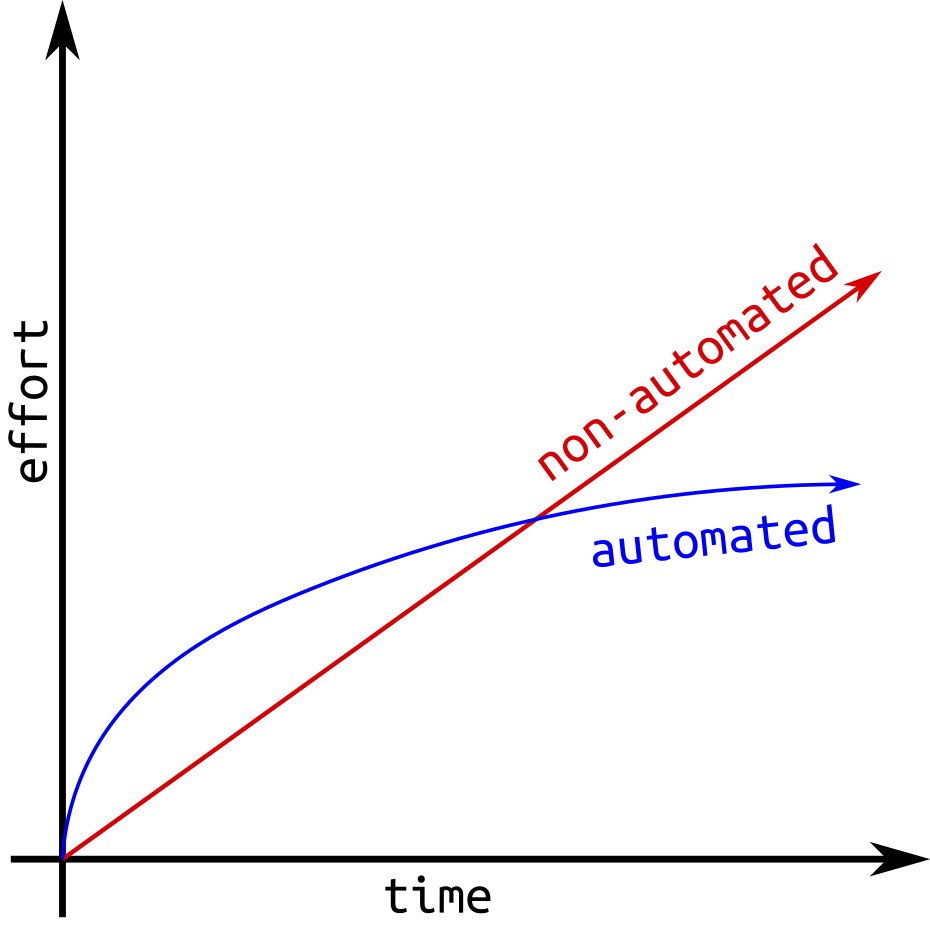
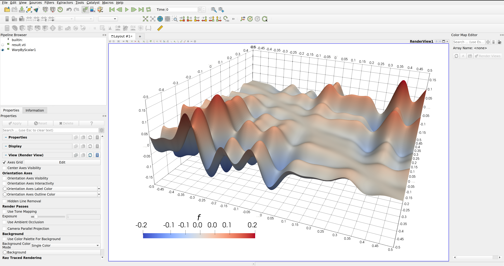
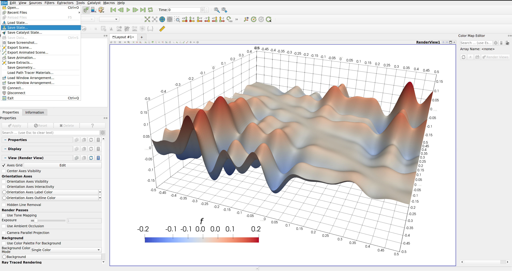

Workflow Automation
Agenda
- Introduction
- Automatic post-processing
- Computational pipelines
- Installation automation
Introduction
Why does automation matter?
Manual steps ...
- ... often remain undocumented
- ... are difficult to document
- ... are difficult to repeat
Why does automation matter?
Automatic steps ...
- ... are never undocumented
- ... are trivial to document
- ... are "easy" to repeat
Pros and Cons
- Initial work overhead
Pros and Cons
+ More efficient in the long run
Pros and Cons
+Today's research can be reunderstood in the future
 Image source
Image source
Pros and Cons
-Dependency hell hinders repeatability

Image source
Things to consider
Prefer tools that allow scripting besides using a GUI
 Image source
Image source
Things to consider
Rely on established packages wherever possible
Image source
Things to consider
Avoid local modifications to reused packages

Image source
Automatic post-processing
An example: ParaView
ParaView allows you to script visualization/processing pipelines with pvbatch
An example: ParaView
A very easy approach is to use states
An example: ParaView
Rendering of a state can be done easily with e.g.
# render_state.py
from paraview.simple import LoadState, Render, SaveScreenshot
LoadState("pvstate.pvsm")
Render()
SaveScreenshot(
filename="function.png",
ImageResolution=(2426, 1660),
TransparentBackground=1
)
and executed using pvbatch
pvbatch render_state.py
You can also skip the GUI entirely and do everything programmatically. See kitware.github.io/paraview-docs/latest/python/paraview.simple.html
An example: ParaView
You can script any of the ParaView filters, e.g. PlotOverLine
# make_plot_data.py
from paraview.simple import XMLImageDataReader, PlotOverLine, CreateWriter, SetActiveSource
function = XMLImageDataReader(FileName="result.vti")
plot = PlotOverLine(Input=function)
plot.Resolution = 2000
plot.Point1 = [0, 0, 0]
plot.Point2 = [250, 250, 0]
writer = CreateWriter("plot_data.csv", plot)
writer.UpdatePipeline()
An example: ParaView
This creates a .csv file that contains the 2000 coordinates along the line in each row together with the interpolated values of all fields.
# plot_data.csv
"function","vtkValidPointMask","arc_length","Points:0","Points:1","Points:2"
0.031107,1,0,0,0,0
0.029419,1,0.17678,0.125,0.125,0
0.027733,1,0.35355,0.25,0.25,0
0.026048,1,0.53033,0.375,0.375,0
0.024366,1,0.70711,0.5,0.5,0
0.022684,1,0.88388,0.625,0.625,0
0.021005,1,1.0607,0.75,0.75,0
0.019327,1,1.2374,0.875,0.875,0
0.01765,1,1.4142,1,1,0
An example: ParaView
Which you can then plot e.g. with matplotlib
# plot.py
import matplotlib.pyplot as plt
from numpy import genfromtxt
data = genfromtxt("plot_data.csv", delimiter=",", names=True)
plt.plot(data["arc_length"], data["function"], label="function")
plt.xlabel("arc_length")
plt.ylabel("function")
plt.savefig("function_plot.pdf", bbox_inches="tight")
An example: ParaView
This allows us to create the image and plot like this:
pvbatch render_state.py # writes function.png
pvbatch make_plot_data.py # writes plot_data.csv
python plot.py # writes function_plot.pdf
Computational pipelines
In order for others to easily reproduce your results, the entire computational pipeline should be automated
For instance, our post-processing example can be automated with a simple bash script
#!/bin/bash
pvbatch render_state.py # writes function.png
pvbatch make_plot_data.py # writes plot_data.csv
python plot.py # writes function_plot.pdf
Let's also add the simulation itself...
#!/bin/bash
./simulation
pvbatch render_state.py # writes function.png
pvbatch make_plot_data.py # writes plot_data.csv
python plot.py # writes function_plot.pdf
This allows users to reproduce your results in one command
Defining workflows
You can also use a workflow tool for automation!
see e.g. github.com/pditommaso/awesome-pipeline

Defining workflows
An example: SnakeMake
configfile: "./input.yml"
# targets to be created in a run of the entire workflow
rule all:
input: "result.vti", "function.png", "function_plot.pdf"
rule run_simulation:
output: "result.vti"
run:
from simulation import simulate
simulate(scale=float(config["scale"]))
rule render_image:
input: "result.vti"
output: "function.png"
shell: "pvbatch render_state.py"
rule plot:
input: "result.vti"
output: "function_plot.pdf"
shell: "pvbatch make_plot_data.py && python3 plot.py"
Defining workflows
An example: SnakeMake
This allows us to execute the workflow or individual rules
snakemake --cores 1
# execute only simulation job
snakemake --cores 1 -R run_simulation
Installation automation
What about dependencies?
You may use a package manager. For instance, Conda
# env.yml
channels:
- conda-forge
- defaults
dependencies:
- fenics=2019.1.0=py39hf3d152e_26
- gmsh=4.6.0=hd134328_0
- meshio=5.0.5=pyhd8ed1ab_0
- paraview=5.9.1=hfc1cbd4_3_egl
- tectonic=0.8.0=ha1fef3e_1
Conda allows you to create a local environment from such env file
What about dependencies?
Some workflow tools have Conda support, for instance SnakeMake
rule render_image:
input: "result.vti"
output: "function.png"
conda: "env.yml"
shell: "pvbatch render_state.py"
For this to work, you need to have Conda up and running, of course...
Limitations & Problems
- Packages must be available in the required versions
- Creating new packages is not trivial
- Does not work for dependencies with modified source code (exotic & maybe problematic itself)
- Users must have the package manager installed
Potential solutions
Provide installation scripts for everything that requires customization & is not available via a package manager
Note: DuMuX users may use the provided helper script
Potential solutions
Provide container images
Note: DuMuX users may use the provided helper script